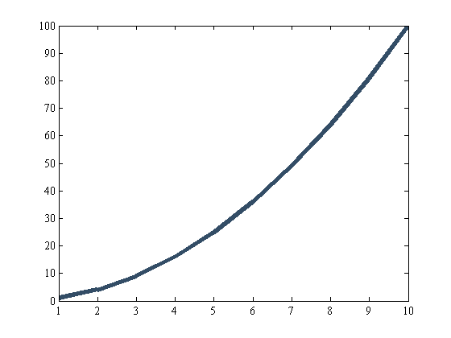
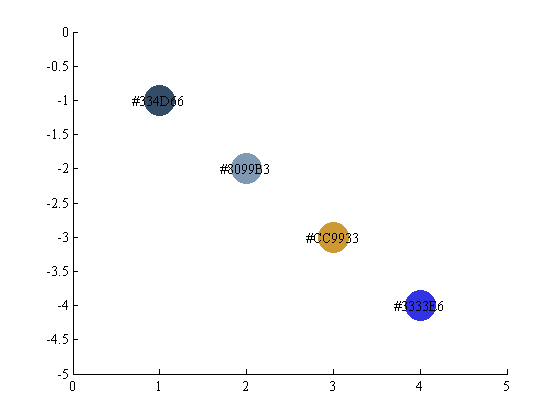

rgb2hex and hex2rgb
These functions convert RGB color triplets to hexadecimal format, or hexadecimal format to RGB color triplets.
Contents
Syntax
rgb2hex(rgb) hex2rgb(hex) hex2rgb(hex,range)
Description
rgb2hex(rgb) converts RGB color triplets to hexadecimal format. If no value in the rgb matrix exceeds unity, values are assumed to be scaled from 0 to 1. If any value in rgb exceeds unity, values are assumed to be scaled from 0 to 255.
hex2rgb(hex) converts hexadecimal to rgb color triplets scale from 0 to 1.
hex2rgb(hex,range) specifies a range as 1 or 256 for scaling output RGB values. A previous version of this function required a range of 255 when scaling from 0 to 255, but letting range equal 256 may be more intuitive, so either input will work now. Whether you enter a range of 255 or 256, RGB values will be scaled from 0 to 255. Default range is 1 to Matlab syntax, meaning values are scaled from 0 to 1.
Examples of rgb2hex
What is the hexadecimal value of pure green?
greenHex = rgb2hex([0 1 0])
greenHex = #00FF00
What if the rgb values are scaled from 0 to 255?
greenHexIsStill = rgb2hex([0 255 0])
greenHexIsStill = #00FF00
This function works for multiple entries too:
myrgbvalues = [.2 .3 .4;
.5 .6 .7;
.8 .6 .2;
.2 .2 .9];
myhexvalues = rgb2hex(myrgbvalues)
myhexvalues = #334D66 #8099B3 #CC9933 #3333E6
Or similarly,
rgb2hex(jet(5))
ans = #0080FF #00FFFF #80FF80 #FFFF00 #FF8000
Examples of hex2rgb
Say some online color program gives you some hex value that you'd like to use in your next Matlab plot. The number '#334D66' is something that Matlab can understand, so we use hex2rgb:
hex2rgb('#334D66')
ans =
0.2000 0.3020 0.4000
The hex2rgb function may also be used inside a plot command:
plot(1:10,(1:10).^2,'color',hex2rgb('#334D66'),'linewidth',5)
The pound sign is optional:
myrgbvalue = hex2rgb('334D66')
myrgbvalue =
0.2000 0.3020 0.4000
Values may be scaled from 0 to 255:
myRGBvalue = hex2rgb('#334D66',256)
myRGBvalue =
51 77 102
Input hex values can be in a matrix:
myhexvalues = ['#334D66';'#8099B3';'#CC9933';'#3333E6']; myrgbvalues = hex2rgb(myhexvalues)
myrgbvalues =
0.2000 0.3020 0.4000
0.5020 0.6000 0.7020
0.8000 0.6000 0.2000
0.2000 0.2000 0.9020
Input hex values may also be in a character array:
HexValsAsACharacterArray = {'#334D66';'#8099B3';'#CC9933';'#3333E6'};
rgbvals = hex2rgb(HexValsAsACharacterArray)
rgbvals =
0.2000 0.3020 0.4000
0.5020 0.6000 0.7020
0.8000 0.6000 0.2000
0.2000 0.2000 0.9020
Character arrays can be useful when plotting and labelling:
x = 1:4; y = -x; scatter(x,y,1e3,rgbvals,'filled') axis([0 5 -5 0]) text(x,y,HexValsAsACharacterArray,'horizontalalignment','center')
Author Info
These functions were written by Chad A. Greene of the University of Texas at Austin's Institute for Geophysics (UTIG) in April of 2014. On advice from Stephen Cobeldick, some changes were made in August 2014. Functionality has not changed with these updates, but the functions are now faster and more robust. Thanks Stephen.